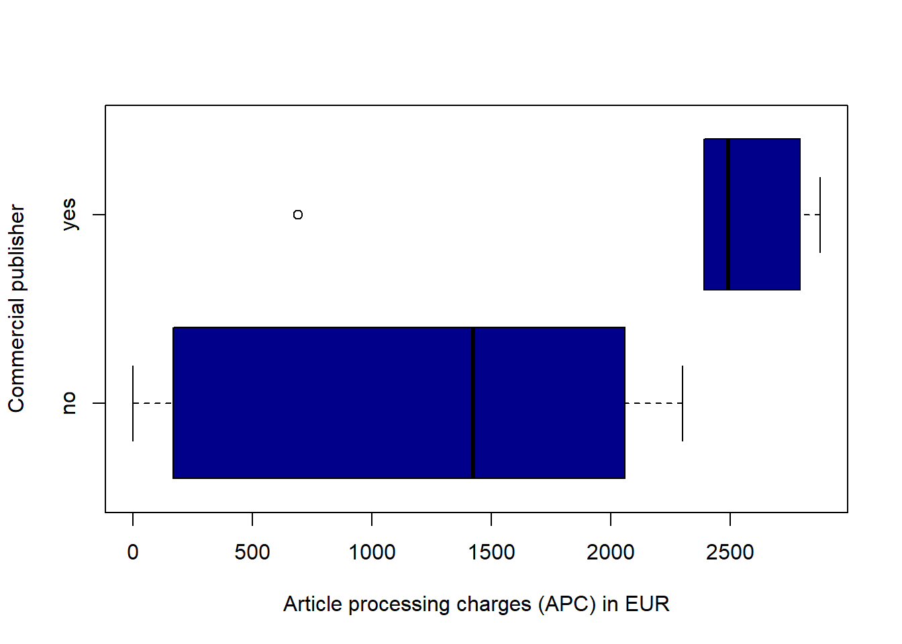
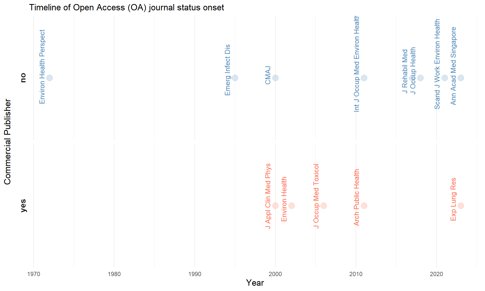

![]()
Code
# Packages used in this session.
if (!require("pacman", quietly = TRUE)) {
install.packages("pacman")
}
pacman::p_load(
tidyverse,
writexl,
readxl,
rvest,
rcrossref,
httr,
jsonlite,
ggrepel,
gt,
report
)Bibliographic analysis of occupational health journals indexed for OSHLINE®
Objective: Open access (OA) publishing allows research to be available to readers at no cost. Under different OA models, costs are transferred to authors, funders, or institutions. This study aimed to evaluate occupational health and safety journals’ policies and indexing for OA. Material and Methods: Journals indexed in the OSHLINE database (n = 216) were identified and their bibliographic characteristics and were obtained from the Crossref, ISSN, and Ulrichsweb databases. Non-academic (n = 9), discontinued (n = 4), and unverified (n = 1) publications were excluded. Remaining journals were searched for indexing in the Directory of Open Access Journals (DOAJ). Data on OA publishing start year, article processing charges (APC), author copyright retention, and available licenses were retrieved from DOAJ. Journals were classified as diamond or non-diamond OA as per the DIAMAS criteria (persistent identification, scholarly journal, OA with licenses, no fees, open to all authors, and community-owned). Publishers were labelled as commercial and non-commercial by reviewing publishers’ websites and stock exchange listings. Results: Out of the 202 journals analyzed, only 13 (6.4%) were indexed in DOAJ. Of these, only 2 were diamond OA journals. The median APC was 1894 EUR (IQR: 690–2390, range: 0–2875). Journals owned by commercial publishers charged higher APC than non-commercial publishers (median 1424 vs 2490 EUR, p = 0.03). Eight (61.5%) allowed authors to retain the copyright of their works. CC-BY licenses were commonly allowed (n = 11, 84.6%), followed by CC0 (n = 5, 38.5%), and CC BY-NC-ND (n = 3, 23.1%). Conclusion: Few occupational health and safety journals indexed in OSHLINE are fully OA, with only 1% diamond OA. Journals owned by commercial publishers charge higher fees to authors, institutions, and funders, on average. Existing journals could evaluate transitioning to non-commercial or diamond OA, while new diamond OA journal initiatives should be encouraged.
Occupational Health, Open Access Publishing, Bibliometrics, Scholarly Communication, Publishing
# Packages used in this session.
if (!require("pacman", quietly = TRUE)) {
install.packages("pacman")
}
pacman::p_load(
tidyverse,
writexl,
readxl,
rvest,
rcrossref,
httr,
jsonlite,
ggrepel,
gt,
report
)The list of journals indexed for OSHLINE® was extracted on 23/04/2025 from the Canadian Centre for Occupational Health and Safety public website. This list contains journal names and their ISSN.
OSHLINE_journals <- read_html(paste0(inputfolder,"/oshline_journal_list.html"))A dataset was be generated from the html file by using functions from the rvest package to obtain a column with the journal name and the ISSN.
# Extract and clean text from html file
journal_text <- OSHLINE_journals %>%
html_elements("div.centralContainer p") %>%
html_text(trim = TRUE)
# Drop first 3 non-journal entries
journal_text <- journal_text[-c(1:3)]
# Split entries that contain multiple journals (multiple ISSNs in one line)
# Use regex to split lines where ISSN pattern is followed by another ISSN
split_lines <- unlist(strsplit(journal_text, "(?<=\\d{4}-\\d{3}[\\dX])(?=\\S)", perl = TRUE))
# Clean whitespace and remove empties
split_lines <- str_trim(split_lines)
split_lines <- split_lines[split_lines != ""]
# Identify correct ISSNs, filter valid lines
journal_df <- tibble(raw_entry = split_lines) %>%
mutate(
issn = str_extract_all(raw_entry, "\\d{4}-\\d{3}[\\dX]"),
count = map_int(issn, length)
) %>%
unnest(issn) %>%
mutate(journal_name = str_trim(str_remove(raw_entry, issn))) %>%
select(journal_name, issn, raw_entry)
# Save as excel file to resolve some remaining collapsed rows and errors
write_xlsx(journal_df, path = file.path(tempfolder, "OSHLINE_journals.xlsx")) After manual inspection and checks for errors, two journals were removed as the ISSN was not registered for one (Facility Safety Management) and the correct ISSN could not be identified for a journal with no exact name matches (Health Promotion). The journal Environmental Carcinogenesis and Ecotoxicology Reviews (ISSN = 1059-0501) was removed as this was a duplicate of the Journal of Environmental Science and Health. Part C, Environmental Carcinogenesis & Ecotoxicology Reviews (ISSN = 1059-0501).
journal_df <- read_excel(path = file.path(psfolder,"OSHLINE_journals.xlsx"))This resulted in a total of n = 216 journals.
The metadata for these journals was enriched by using the rcrossref package by first searching for the ISSN. For cases where there is no ISSN match, journal titles were searched.
source("scripts/crossref_metadata.R")journals_crossref <- read_excel(path = file.path(psfolder,"OSHLINE_crossref.xlsx"))Data on the publisher and the ISSN linked to the journal title were retrieved from crossref. The electronic ISSN could not be retrieved. Therefore, the ISSN portal was searched to extract other ISSNs, likely corresponding to the electronic ISSN. Later confirmation was done by matching of ISSNs against a robust bibliographic database (Ulrichsweb) as detailed below.
source("scripts/electronic_issn_retrieval.R")Discordant ISSN from the original OSHLINE dataset and crossref were manually removed and checked against the ISSN portal. One journal was removed because its ISSN could not be confirmed in the ISSN portal (Occupational Health and Safety (Tx.)).
journals_with_eissn <- read_excel(path = file.path(psfolder,"OSHLINE_journals_eissn.xlsx")) %>%
rowid_to_column() %>%
rename(id = rowid)A list of all unduplicated ISSN was generated to search for individual ISSN in the Ulrichsweb database (Ulrichsweb.com™, Copyright © 2025 ProQuest LLC).
# Load results of search in Ulrichsweb and remove the last row
ulrichsweb <- read.csv(
file.path(inputfolder, "2025_04_25_Ulrichsweb_oshline_journals.csv"),
na.strings = "null"
) %>%
slice(1:(n() - 1)) %>% # remove the last row containing the copyright notice
rename(issn = "ISSN")A total of n = 415 ISSNs (print and electronic) were searched, out of which n = 388 (93.5%) records were found in ulrichsweb and downloaded for further examination against the dataset.
# Convert the journals_with_eissn to long format
journals_long <- journals_with_eissn %>%
rename(issn_oshline = issn) %>%
pivot_longer(
cols = c(issn_oshline, print_issn, electronic_issn),
names_to = "issn_source",
values_to = "issn"
)
# Deduplicate repeated issn
journals_long_dedup <- journals_long %>%
distinct(issn, .keep_all = TRUE) %>%
filter(!is.na(issn))
# Left join with ulrichsweb dataset
journals_ulrichsweb_long <- journals_long_dedup %>%
left_join(ulrichsweb, by = "issn")# Remove ceased journals
journals_ulrichsweb_long <- journals_ulrichsweb_long %>%
filter(!(Status %in% "Ceased"))
# Identify the ids present in journals_with_eissn but not in journals_ulrichsweb_long
removed_journal_ids <- journals_with_eissn %>%
anti_join(journals_ulrichsweb_long, by = "id") %>%
pull(id)A total of n = 9 (4.2%) journals were removed from the dataset due to having a discontinued status without a subsequent active journal under a different publisher. The list of those journals is as follows:
# Show the names of the journals with those removed ids
journals_with_eissn %>%
filter(id %in% removed_journal_ids) %>%
select(id, journal_name) %>%
gt %>%
cols_label(id = "ID", journal_name = "Journal")| ID | Journal |
|---|---|
| 59 | Clinics in Occupational and Environmental Medicine |
| 94 | International Journal of Cognitive Ergonomics |
| 100 | International Journal of Occupational and Environmental Health |
| 106 | International Review of Industrial and Organizational Psychology |
| 117 | Journal of Biological Chemistry |
| 164 | Just Labour |
| 180 | Noise Notes |
| 182 | Occupational Ergonomics |
| 185 | Occupational Hygiene |
# Remove ceased journals
journals_ulrichsweb_long <- journals_ulrichsweb_long %>%
filter(!(Content.Type %in% "Trade"))
# Identify the ids present in journals_with_eissn but not in journals_ulrichsweb_long
removed_journal_trade <- journals_with_eissn %>%
anti_join(journals_ulrichsweb_long, by = "id") %>%
filter(!(id %in% removed_journal_ids)) %>%
pull(id)A total of n = 4 (1.9%) journals were removed from the dataset due to not being academic or scholarly publications:
# Show the names of the journals with those removed ids
journals_with_eissn %>%
filter(id %in% removed_journal_trade) %>%
select(id, journal_name) %>%
gt %>%
cols_label(id = "ID", journal_name = "Journal")| ID | Journal |
|---|---|
| 3 | Accident Prevention |
| 41 | Canadian Journal of Infection Control |
| 44 | Canadian Occupational Safety |
| 177 | NFPA Journal: the Official Magazine of the National Fire Protection Association |
There were three journals with more than two ISSN identifier. The print_issn which had a match with ulrichsweb were kept instead of the OSHLINE ISSN.
issn_greater_two <- journals_ulrichsweb_long %>%
group_by(id) %>% # Group the data by the identifier
summarise(
number_of_issn = n() # Count the number of unique ISSNs in each group
) %>%
filter(number_of_issn > 2) %>%
pull(id)
journals_ulrichsweb_long <- journals_ulrichsweb_long %>%
filter(!(id %in% issn_greater_two & issn_source == "issn_oshline")) %>%
mutate(
issn_source = case_when(
issn_source == "electronic_issn" ~ "online",
T ~ "print"
)
)# Remove definitively from journals_with_eissn
journals_with_eissn <- journals_with_eissn %>%
filter(!(id %in% c(removed_journal_ids, removed_journal_trade)))source("scripts/DOAJ_match.R")journals_doaj <- read_excel(path = file.path(psfolder,"OSHLINE_journals_DOAJ_match.xlsx")) All the remaining n = 373 ISSNs in the long dataframe containing bibliographic information from Ulrichsweb were searched in the DOAJ. Whenever an exact match was found for any ISSN, this was registered as TRUE in a new column. The journal ID with a TRUE value were identified and additional information on their open access publishing characteristics were exctracted for further analysis.
# id of journals with a doaj match
id_journals_doaj <- journals_doaj %>%
filter(doaj_match == TRUE) %>%
distinct(id) %>% pullOut of the remaining n = 202 journals, a total of n = 13 (6.4%) were indexed in the Directory of Open Access Journals (DOAJ):
# Show the names of the journals that had a DOAJ match
journals_doaj %>%
filter(doaj_match == TRUE) %>%
distinct(id, journal_name) %>%
gt %>%
cols_label(id = "ID", journal_name = "Journal")| ID | Journal |
|---|---|
| 17 | Annals of the Academy of Medicine, Singapore |
| 26 | Archives of Public Health |
| 43 | Canadian Medical Association Journal |
| 64 | Emerging Infectious Diseases |
| 67 | Environmental Health : A Global Science Access Source |
| 68 | Environmental Health Perspectives : EHP |
| 77 | Experimental Lung Research |
| 101 | International Journal of Occupational Medicine and Environmental Health |
| 114 | Journal of Applied Clinical Medical Physics |
| 143 | Journal of Occupational Health (Japan) |
| 145 | Journal of occupational medicine and toxicology |
| 149 | Journal of Rehabilitation Medicine |
| 200 | Scandinavian Journal of Work, Environment and Health |
# Recreate the journals_with_eissn column to export data, as all data
# from ulrichsweb cannot be exported and shared publicly.
journals_with_eissn <- journals_with_eissn %>%
mutate(
doaj_match = case_when(
id %in% id_journals_doaj ~ TRUE,
T ~ FALSE
)
) %>%
select(-issn_print_exact_match)write_xlsx(journals_with_eissn, path = file.path(tempfolder, "OSHLINE_journals_DOAJ_match.xlsx")) The following analyses are restricted to the 13 publications indexed in the DOAJ.
journals_analysis <- read_excel(path = file.path(psfolder,"OSHLINE_journals_DOAJ_match.xlsx")) %>%
filter(doaj_match == TRUE)Journals were binary classified as diamond open access (DOA) and non-DOA based on meeting all six criteria stated in the DIAMAS classification. Only 2 journals met all criteria to be classified as DOA:
# Show the names of the journals that had a DOAJ match
journals_analysis %>%
filter(diamond_OA == "yes") %>%
distinct(id, journal_name) %>%
gt %>%
cols_label(id = "ID", journal_name = "Journal")| ID | Journal |
|---|---|
| 64 | Emerging Infectious Diseases |
| 68 | Environmental Health Perspectives : EHP |
Therefore, the percentage of DOA journals out of the total set of publications was 1%.
Whenever APC charges were registered in a currency distinct to euros (EUR), values were converted to EUR by using international currency exchange rates from Google Finance on 23/04/2025.
The summary of journal article processing charges (APC) per article in euros (EUR) is shown in this table:
journals_analysis %>%
summarize(
n = n(),
min = min(APC),
Q1 = quantile(APC,0.25),
median = median(APC),
Q3 = quantile(APC,0.75),
max = max(APC)
) %>%
gt %>%
cols_label(n = "Number of Journals") %>%
cols_align(
align = "center",
columns = everything()
)| Number of Journals | min | Q1 | median | Q3 | max |
|---|---|---|---|---|---|
| 13 | 0 | 690 | 1894 | 2390 | 2875 |
The status of the publisher as a commercial or non-commercial publisher was classified by reviewing the publishers’ websites when available, or listings of companies on a stock exchange (if true, these were labelled as commercial).
The summary of APC in EUR according to commercial status of the publisher is as follows:
journals_analysis %>%
group_by(commercial_publisher) %>%
summarize(
n = n(),
min = min(APC),
Q1 = quantile(APC,0.25),
median = median(APC),
Q3 = quantile(APC,0.75),
max = max(APC)
) %>%
gt %>%
cols_label(
n = "Number of Journals",
commercial_publisher = "Commercial Publisher"
) %>%
cols_align(
align = "center",
columns = everything()
)| Commercial Publisher | Number of Journals | min | Q1 | median | Q3 | max |
|---|---|---|---|---|---|---|
| no | 8 | 0 | 251.25 | 1424 | 1975.5 | 2300 |
| yes | 5 | 690 | 2390.00 | 2490 | 2790.0 | 2875 |
boxplot(APC ~ commercial_publisher,
data = journals_analysis,
horizontal = TRUE,
ylab = "Commercial publisher",
xlab = "Article processing charges (APC) in EUR",
col = "darkblue"
)
The Mann-Withney U-test (Wilcoxon’s rank sum test) was applied to test the alternative hypothesis that the APC differed according to publisher commercial status classification:
wil <- wilcox.test(APC ~ commercial_publisher,
data = journals_analysis,
exact = FALSE
)
wil
Wilcoxon rank sum test with continuity correction
data: APC by commercial_publisher
W = 5, p-value = 0.03354
alternative hypothesis: true location shift is not equal to 0The year of registration of journals as fully open access (OA) is summarized in the following table:
journals_analysis %>%
summarize(
n = n(),
min = min(OA_since),
Q1 = quantile(OA_since,0.25),
median = median(OA_since),
Q3 = quantile(OA_since,0.75),
max = max(OA_since)
) %>%
gt %>%
cols_label(n = "Number of Journals") %>%
cols_align(
align = "center",
columns = everything()
)| Number of Journals | min | Q1 | median | Q3 | max |
|---|---|---|---|---|---|
| 13 | 1972 | 2000 | 2011 | 2018 | 2023 |
The onset of publication as fully OA, according to journal commercial status is shown in the following plot:
journals_analysis %>%
ggplot(aes(x = OA_since, y = 0, color = commercial_publisher)) +
facet_grid(rows = vars(commercial_publisher), switch = "y") +
geom_point(size = 4, alpha = 1/5) +
geom_text(
aes(label = MEDLINE_abbreviation),
vjust = -1, # slightly above the points
hjust = 0.35, # align to the left of each label
angle = 90, # rotate the text
size = 3.5
) +
scale_color_manual(values = c("yes" = "tomato", "no" = "steelblue")) +
theme_minimal() +
theme(
axis.title = element_text(size = 13),
axis.text.y = element_blank(),
axis.ticks.y = element_blank(),
panel.grid.major.y = element_blank(),
panel.grid.minor.y = element_blank(),
strip.text = element_text(size = 12, face = "bold"),
legend.position = "none"
) +
labs(
title = "Timeline of Open Access (OA) journal status onset",
y = "Commercial Publisher",
x = "Year"
) 
The types of licenses allowed in the journals indexed in DOAJ were the following:
journals_analysis %>%
mutate(N = length(id)) %>%
separate_rows(License, sep = ", ") %>%
group_by(License) %>%
summarize(n = n(), N = first(N)) %>%
arrange(desc(n)) %>%
mutate(Percentage = round((n/N * 100),1)) %>%
gt %>%
cols_hide(N)| License | n | Percentage |
|---|---|---|
| CC BY | 11 | 84.6 |
| CC0 | 5 | 38.5 |
| CC BY-NC-ND | 3 | 23.1 |
| CC BY-NC | 2 | 15.4 |
| CC BY-NC-SA | 1 | 7.7 |
report::cite_packages(session)DOA journal occupational - Abstract EPICOH DOA journal occupational - Abstract EPICOH DOA journal occupational - Abstract EPICOH DOA journal occupational Objective: Open access (OA) publishing allows research to be available to readers at no cost. Under different OA models, costs are transferred to authors, funders, or institutions. This study aimed to evaluate occupational health and safety journals’ policies and indexing for OA. Material and Methods: Journals indexed in the OSHLINE database (n = 216) were identified and their bibliographic characteristics and were obtained from the Crossref, ISSN, and Ulrichsweb databases. Non-academic (n = 9), discontinued (n = 4), and unverified (n = 1) publications were excluded. Remaining journals were searched for indexing in the Directory of Open Access Journals (DOAJ). Data on OA publishing start year, article processing charges (APC), author copyright retention, and available licenses were retrieved from DOAJ. Journals were classified as diamond or non-diamond OA as per the DIAMAS criteria (persistent identification, scholarly journal, OA with licenses, no fees, open to all authors, and community-owned). Publishers were labelled as commercial and non-commercial by reviewing publishers’ websites and stock exchange listings. Results: Out of the 202 journals analyzed, only 13 (6.4%) were indexed in DOAJ. Of these, only 2 were diamond OA journals. The median APC was 1894 EUR (IQR: 690–2390, range: 0–2875). Journals owned by commercial publishers charged higher APC than non-commercial publishers (median 1424 vs 2490 EUR, p = 0.03). Eight (61.5%) allowed authors to retain the copyright of their works. CC-BY licenses were commonly allowed (n = 11, 84.6%), followed by CC0 (n = 5, 38.5%), and CC BY-NC-ND (n = 3, 23.1%). Conclusion: Few occupational health and safety journals indexed in OSHLINE are fully OA, with only 1% diamond OA. Journals owned by commercial publishers charge higher fees to authors, institutions, and funders, on average. Existing journals could evaluate transitioning to non-commercial or diamond OA, while new diamond OA journal initiatives should be encouraged. Objective: Open access (OA) publishing allows research to be available to readers at no cost. Under different OA models, costs are transferred to authors, funders, or institutions. This study aimed to evaluate occupational health and safety journals’ policies and indexing for OA. Material and Methods: Journals indexed in the OSHLINE database (n = 216) were identified and their bibliographic characteristics and were obtained from the Crossref, ISSN, and Ulrichsweb databases. Non-academic (n = 9), discontinued (n = 4), and unverified (n = 1) publications were excluded. Remaining journals were searched for indexing in the Directory of Open Access Journals (DOAJ). Data on OA publishing start year, article processing charges (APC), author copyright retention, and available licenses were retrieved from DOAJ. Journals were classified as diamond or non-diamond OA as per the DIAMAS criteria (persistent identification, scholarly journal, OA with licenses, no fees, open to all authors, and community-owned). Publishers were labelled as commercial and non-commercial by reviewing publishers’ websites and stock exchange listings. Results: Out of the 202 journals analyzed, only 13 (6.4%) were indexed in DOAJ. Of these, only 2 were diamond OA journals. The median APC was 1894 EUR (IQR: 690–2390, range: 0–2875). Journals owned by commercial publishers charged higher APC than non-commercial publishers (median 1424 vs 2490 EUR, p = 0.03). Eight (61.5%) allowed authors to retain the copyright of their works. CC-BY licenses were commonly allowed (n = 11, 84.6%), followed by CC0 (n = 5, 38.5%), and CC BY-NC-ND (n = 3, 23.1%). Conclusion: Few occupational health and safety journals indexed in OSHLINE are fully OA, with only 1% diamond OA. Journals owned by commercial publishers charge higher fees to authors, institutions, and funders, on average. Existing journals could evaluate transitioning to non-commercial or diamond OA, while new diamond OA journal initiatives should be encouraged.